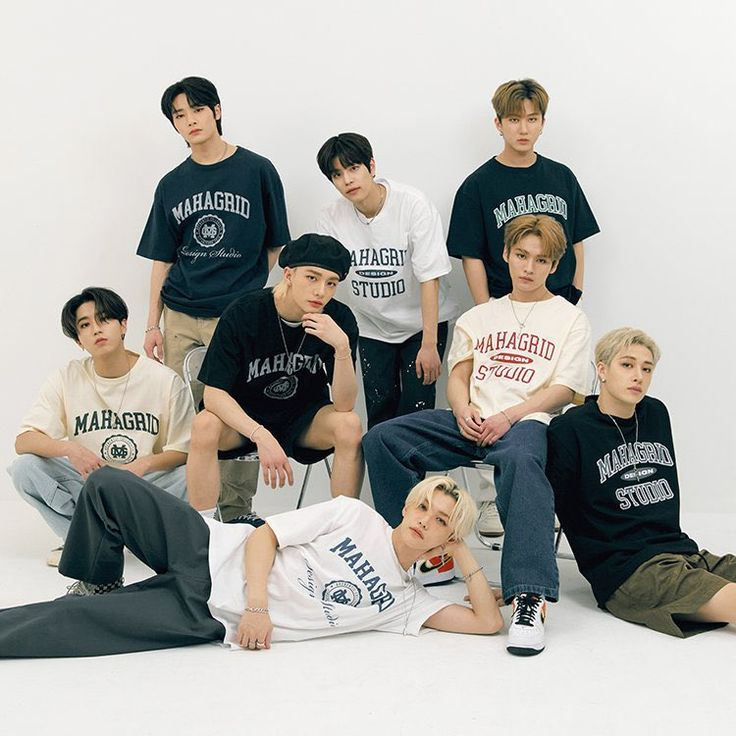

ОПИСАНИЕ
Stray Kids — южнокорейский бой-бэнд, сформированный в 2017 году компанией JYP Entertainment через одноимённое реалити-шоу на выживание. Группа состоит из восьми участников: Пан Чхана, Ли Ноу, Чханбина, Хёнджина, Джисона, Феликса, Сынмина и I.N. 8 января 2018 года они выпустили предебютный мини-альбом Mixtape.СОСТАВ
Пан Кристофер Чхан - лидер, ведущий вокалист, ведущий танцор, рэпер, продюсер
Ли Мин Хо - главный танцор, рэпер, ведущий вокалист
Со Чхан Бин - главный рэпер, продюсер
Хван Хён Джин - главный танцор, ведущий рэпер, вокалист, вижуал, центр
Хан Джи Сон - главный рэпер, ведущий вокалист, продюсер
Ли Феликс - ведущий танцор, ведущий рэпер
Ким Сын Мин - главный вокалист
Ян Чон Ин - вокалист, макнэ